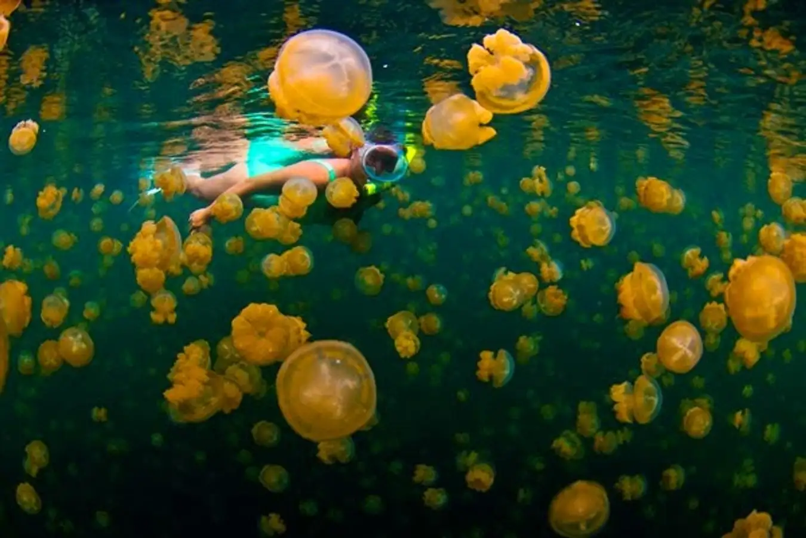
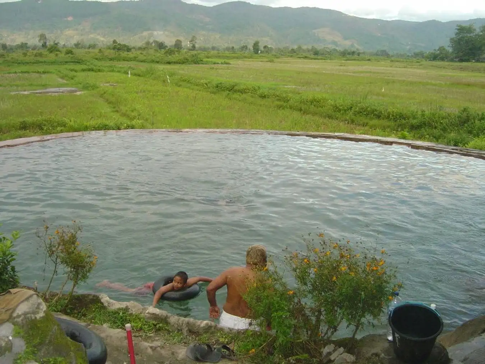
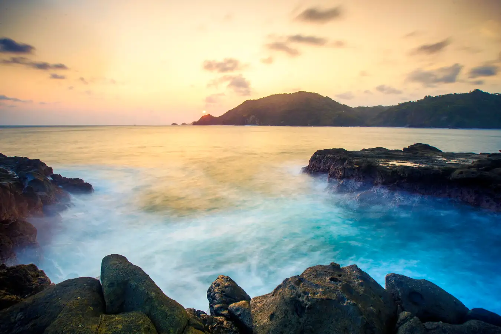
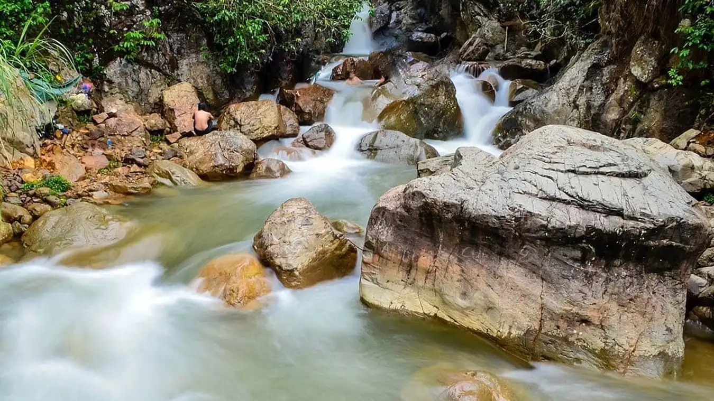
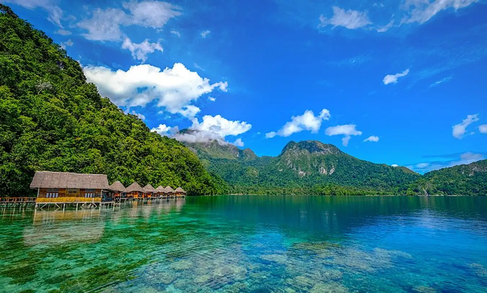
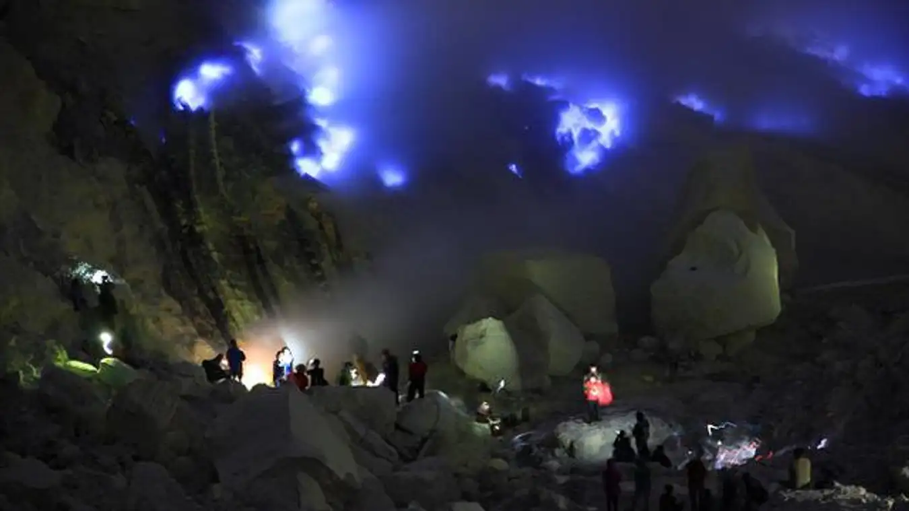

<!DOCTYPE html>
<html lang="en" class="scroll-smooth">
  <head>
    <meta charset="UTF-8" />
    <meta http-equiv="X-UA-Compatible" content="IE=edge" />
    <meta name="viewport" content="width=device-width, initial-scale=1.0" />
    <!-- link fontawesome -->
    <link rel="preconnect" href="https://cdnjs.cloudflare.com/ajax/libs/font-awesome/6.1.2/css/all.min.css" />
    <!-- link fonts from google -->
    <link rel="preconnect" href="https://fonts.googleapis.com" />
    <link rel="preconnect" href="https://fonts.gstatic.com" crossorigin />
    <link
      href="https://fonts.googleapis.com/css2?family=Inter:wght@100;200;300;500;600;700;800;900&family=Montserrat&family=Pacifico&family=Poppins:wght@100;200;300;400;500;800;900&display=swap"
      rel="stylesheet"
    />
    <!-- link tailwindcss -->
    <link href="./dist/output.css" rel="stylesheet">
    <title>Undiscovered Indonesia</title>
    <script>
      if (
        localStorage.theme === "dark" ||
        (!("theme" in localStorage) &&
          window.matchMedia("(prefers-color-scheme: dark)").matches)
      ) {
        document.documentElement.classList.add("dark");
      } else {
        document.documentElement.classList.remove("dark");
      }
    </script>
  </head>
</html>

<!-- Header Start -->
<header class="bg-transparent absolute top-0 left-0 w-full flex items-center z-10">
    <div class="container">
        <div class="flex items-center justify-between relative">
            <div class="heroku px-4">
                <a href="#home" class="font-bold text-lg text-dark dark:text-white block py-6">undiscovered.<span class="text-primary">indonesia</span></a>
            </div>
            <div class="flex items-center px-4">
                <button id="hamburger" name="hamburger" type="button" class="block absolute right-4 lg:hidden">
                    <span class="hamburger-line transition duration-300 ease-in-out origin-top-left "></span>
                    <span class="hamburger-line transition duration-300 ease-in-out"></span>
                    <span class="hamburger-line transition duration-300 ease-in-out origin-bottom-left"></span>
                </button>
                
                <nav id="nav-menu" class="hidden absolute py-5 bg-white shadow-lg rounded-lg max-w-[250px] w-full right-4 top-full lg:block lg:static lg:bg-transparent lg:max-w-full lg:shadow-none lg:rounded-none dark:bg-dark dark:shadow-slate-300 lg:dark:bg-transparent">
                    <ul class="block lg:flex">
                        <li class="group">
                            <a href="#home" class="text-base text-dark py-2 mx-6 flex group-hover:text-primary dark:text-white">Home</a>
                        </li>
                        <li class="group">
                            <a href="#gallery" class="text-base text-dark py-2 mx-6 flex group-hover:text-primary dark:text-white">Gallery</a>
                        </li>
                        <li class="group">
                            <a href="#destination" class="text-base text-dark py-2 mx-6 flex group-hover:text-primary dark:text-white">Find Destination</a>
                        </li>
                        <li class="group">
                            <a href="#about" class="text-base text-dark py-2 mx-6 flex group-hover:text-primary dark:text-white">About Us</a>
                        </li>
                        <li class="mt-3 lg:mt-0 flex items-center pl-8">
                            <div class="flex">
                                <span class="mr-2 text-sm text-slate-500 fa-sun">light</span>
                                <input type="checkbox" class="hidden" id="dark-toggle" />
                                <label for="dark-toggle">
                                    <div class="flex h-5 w-9 cursor-pointer items-center rounded-full bg-slate-500 p-1 ">
                                        <div class="toggle-circle h-4 w-4 rounded-full bg-white transition duration-300 ease-in-out">
                                            
                                        </div>
                                    </div>
                                </label>
                                <span class="ml-2 text-sm text-slate-500">dark</span>
                            </div>
                        </li>
                    </ul>
                </nav>
            </div>
        </div>
    </div>
</header>
<!-- Header End -->

<!-- Hero Section Start -->
<section id="home" class="pt-[40px] dark:bg-dark">
    <div class="">
        <div class="flex flex-col">
            <div class="w-full h-screen mt-[42px] py-20 bg-center bg-cover shadow-lg relative" style="background-image: url('./src/img/banner.jpg')">
                <h1 class="p-5 text-7xl font-inter font-thin text-white text-shadow-lg tracking-widest">EXPLORE THE NEW<br> UNDISCOVERED PLACES <br> BEHIND <span class="bg-gradient-to-r  from-red-500 to-slate-200 bg-clip-text text-transparent">INDONESIA!</span></h1>
            </div>
        </div>
    </div>
</section>
<!-- Hero Section End -->

<!-- Grid Start -->
<div id="gallery" class="p-2 font-inter grid grid-cols-2 gap-2 md:grid-cols-4 md:p-4 dark:bg-slate-800">
    
    <h2 class="h-15 font-semibold text-xl text-slate-700 md:col-start-4 md:row-start-2 md:flex dark:text-white"><span class="self-start">Welcome to undiscovered.<span class="text-primary">indonesia</span></span></h2>
    <div class="h-15 text-lg font-bold text-slate-900 md:col-start-2 md:row-start-2 md:flex dark:text-white"><span class="self-end">@undiscovered.indonesia</span></div>
    
    <div class="h-15 bg-blue-500 aspect-[4/3] rounded-lg md:aspect-[3/4] xl:aspect-[4/3] overflow-hidden group relative hover:scale-95 transition-all duration-500" alt="">
      <div class="w-full h-full bg-[url('/src/img/grid/1.jpg')] bg-cover bg-center absolute group-hover:scale-125 group-hover:rotate-12 transition-all duration-500"></div>
    </div>
    <div class="h-15 bg-blue-500 aspect-[4/3] rounded-lg md:aspect-[3/4] xl:aspect-[4/3] md:col-start-3 overflow-hidden group relative hover:scale-95 transition-all duration-500">
      <div class="w-full h-full bg-[url('/src/img/grid/2.jpg')] bg-cover bg-center absolute group-hover:scale-125 group-hover:rotate-12 transition-all duration-500"></div>
    </div>
      <div class="h-15 bg-blue-500 aspect-[4/3] rounded-lg md:aspect-[3/4] xl:aspect-[4/3] overflow-hidden group relative hover:scale-95 transition-all duration-500">
        <div class="w-full h-full bg-[url('/src/img/grid/3.jpg')] bg-cover bg-center absolute group-hover:scale-125 group-hover:rotate-12 transition-all duration-500"></div>
      </div>
      <div class="h-15 bg-blue-500 aspect-[4/3] rounded-lg md:aspect-[3/4] xl:aspect-[4/3] overflow-hidden group relative hover:scale-95 transition-all duration-500">
        <div class="w-full h-full bg-[url('/src/img/grid/4.jpg')] bg-cover bg-center absolute group-hover:scale-125 group-hover:rotate-12 transition-all duration-500"></div>
      </div>
      <div class="h-15 bg-blue-500 aspect-[4/3] rounded-lg md:aspect-[3/4] xl:aspect-[4/3] overflow-hidden group relative hover:scale-95 transition-all duration-500">
        <div class="w-full h-full bg-[url('/src/img/grid/5.jpg')] bg-cover bg-center absolute group-hover:scale-125 group-hover:rotate-12 transition-all duration-500"></div>
      </div>
      <div class="h-15 bg-blue-500 aspect-[4/3] rounded-lg md:aspect-[3/4] xl:aspect-[4/3] md:col-start-2 overflow-hidden group relative hover:scale-95 transition-all duration-500">
        <div class="w-full h-full bg-[url('/src/img/grid/6.jpg')] bg-cover bg-center absolute group-hover:scale-125 group-hover:rotate-12 transition-all duration-500"></div>
      </div>
      <div class="h-15 bg-blue-500 aspect-[4/3] rounded-lg md:aspect-[3/4] xl:aspect-[4/3] md:col-start-4 overflow-hidden group relative hover:scale-95 transition-all duration-500">
        <div class="w-full h-full bg-[url('/src/img/grid/7.jpg')] bg-cover bg-center absolute group-hover:scale-125 group-hover:rotate-12 transition-all duration-500"></div>
      </div>
      <div class="h-15 bg-blue-500 aspect-[4/3] rounded-lg md:aspect-[3/4] xl:aspect-[4/3] overflow-hidden group relative hover:scale-95 transition-all duration-500">
        <div class="w-full h-full bg-[url('/src/img/grid/8.jpg')] bg-cover bg-center absolute group-hover:scale-125 group-hover:rotate-12 transition-all duration-500"></div>
      </div>
      <div class="h-15 bg-blue-500 aspect-[4/3] rounded-lg md:aspect-[3/4] xl:aspect-[4/3] md:col-start-3 overflow-hidden group relative hover:scale-95 transition-all duration-500">
        <div class="w-full h-full bg-[url('/src/img/grid/9.jpg')] bg-cover bg-center absolute group-hover:scale-125 group-hover:rotate-12 transition-all duration-500"></div>
      </div>
      <div class="h-15 bg-blue-500 aspect-[4/3] rounded-lg md:aspect-[3/4] xl:aspect-[4/3] md:col-start-3 overflow-hidden group relative hover:scale-95 transition-all duration-500">
        <div class="w-full h-full bg-[url('/src/img/grid/10.jpg')] bg-cover bg-center absolute group-hover:scale-125 group-hover:rotate-12 transition-all duration-500"></div>
      </div>
    </div>
<!-- Grid End -->

<!-- Destination Section Start -->
<section id="destination" class="pt-36 pb-32 bg-slate-100 dark:bg-slate-700">
    <div class="container">
        <div class="w-full px-4">
            <div class="max-w-xl mx-auto text-center mb-16">
                <h4 class="font-semibold text-lg text-primary mb-2">Hidden</h4>
                    <h2 class="font-bold text-dark text-3xl mb-4 sm:text-4xl lg:text-5xl dark:text-white">DESTINATION </h2>
                    <p class="font-medium text-md text-secondary md:text-lg">Hidden tourist spots whose beauty can exceed other tourist spots.</p>
                </div>
            </div>
            
            <div class="flex flex-wrap">
                <div class="w-full px-4 lg:w-1/2 xl:w-1/3">
                    <div class="bg-white rounded-xl shadow-lg overflow-hidden mb-10 dark:bg-slate-800">
                        
                        <div class="py-8 px-6">
                            <h3><a class="block mb-3 font-semibold text-xl text-dark  truncate dark:text-white">Kakaban Lake, <span class="text-red-400 dark:text-red-400">East Kalimantan</span></a></h3>
                            <p class="font-medium text-base text-secondary mb-6">This lake is located on Kakaban Island, Derawan Islands, and East Kalimantan. Unlike other lakes that freshwater fish usually inhabit, this lake is inhabited by jellyfish. However, you don't need to worry because the jellyfish in this rarely known Indonesian tourist attraction don't sting, so you can freely swim here.

                                Lake Kakaban is one of only two places in the world where you can find this species of stingless jellyfish, apart from Jellyfish Lake in Micronesia.</p>           
                        </div>
                    </div>
                </div>
                <div class="w-full px-4 lg:w-1/2 xl:w-1/3">
                    <div class="bg-white rounded-xl shadow-lg overflow-hidden mb-10 dark:bg-slate-800">
                        
                        <div class="py-8 px-6">
                            <h3>
                                <a class="block mb-3 font-semibold text-xl text-dark  truncate dark:text-white">Soda Water Baths, <span class="text-red-400  dark:text-red-400">North Sumatra</span></a></h3>
                                <p class="font-medium text-base text-secondary mb-6">Sounds weird? Don't worry, you didn't read it wrong, <br> The name of a tourist spot in Indonesia that people rarely know is the Soda Water Bath. This tourist destination in Indonesia is located in Tarutung, North Sumatra, and is the only soda water pool in Indonesia.

                                    The name is soda water pool because there are many bubbles that come from inside the pool and its shape resembles soda. Now, this soda water bath is crowded with tourists and interested in stopping by.</p>
                            </div>
                        </div>
                    </div>
                <div class="w-full px-4 lg:w-1/2 xl:w-1/3">
                    <div class="bg-white rounded-xl shadow-lg overflow-hidden mb-10 dark:bg-slate-800">
                        
                        <div class="py-8 px-6">
                            <h3><a class="block mb-3 font-semibold text-xl text-dark truncate dark:text-white">Wediombo Beach, <span class="text-red-400  dark:text-red-400">Yogyakarta</span></a></h3>
                            <p class="font-medium text-base text-secondary mb-6">Wedi Ombo Beach, which is located at the end of the Mountain Kidul district, is dominated by coral rocks with white sand. All your time is paid off by the beautiful view of the beach.
                                
                                In this Indonesian tourist attraction, you can snorkel, surf, fish, or just relax, hang out with friends, and enjoy the sunset at Wedi Ombo. For those of you who want to camp on the beach, you don't need to worry because the beach is clean, and bathrooms and toilets are available.</p>
                        </div>
                    </div>
                </div>
                <div class="w-full px-4 lg:w-1/2 xl:w-1/3">
                    <div class="bg-white rounded-xl shadow-lg overflow-hidden mb-10 dark:bg-slate-800">
                        
                        <div class="py-8 px-6">
                            <h3><a class="block mb-3 font-semibold text-xl text-dark  truncate dark:text-white">Leuwi Hejo, <span class="text-red-400  dark:text-red-400">West Java</span></a></h3>
                            <p class="font-medium text-base text-secondary mb-6">"Not far from Jakarta, you can also find hidden Indonesian tours that are no less impressive, namely, Leuwi Hejo which is in Sentul, Bogor. Leuwi Hejo is one of the many crystal clear waterfalls in the Sentul area.

                                Arriving at this little-known tourist attraction, you will be greeted by the gurgling of fresh water flowing from one end to the other and fresh air. The best part? Visitors are allowed to soak in this refreshing cold water for free, you know!"</p>
                        </div>
                    </div>
                </div>
                <div class="w-full px-4 lg:w-1/2 xl:w-1/3">
                    <div class="bg-white rounded-xl shadow-lg overflow-hidden mb-10 dark:bg-slate-800">
                        
                        <div class="py-8 px-6">
                            <h3><a class="block mb-3 font-semibold text-xl text-dark  truncate dark:text-white">Ora Beach, <span class="text-red-400  dark:text-red-400">Maluku</span></a></h3>
                            <p class="font-medium text-base text-secondary mb-6">On vacation to the east of Indonesia, one of Indonesia's hidden tourist paradises that you can visit is Ora Beach.

                                Not only the clean sandy beaches and clear sea water, the limestone mountain landscapes that become the background further add to the beauty of tourist attractions in Indonesia.
                                
                                Stop by this one Indonesian tourist destination, and don't miss the opportunity to enjoy the beauty of the underwater world in its waters by snorkeling or diving.</p>
                        </div>
                    </div>
                </div>
                <div class="w-full px-4 lg:w-1/2 xl:w-1/3">
                    <div class="bg-white rounded-xl shadow-lg overflow-hidden mb-10 dark:bg-slate-800">
                        
                        <div class="py-8 px-6">
                            <h3><a class="block mb-3 font-semibold text-xl text-dark  truncate dark:text-white">Ijen Crater, <span class="text-red-400  dark:text-red-400">East Java</span></a></h3>
                            <p class="font-medium text-base text-secondary mb-6">Although recently this Indonesian tourist attraction has become popular, initially the existence of Ijen Crater is not as famous as the White Crater or other mountains in Indonesia.

                                You can see this rare phenomenon directly at Ijen Crater in Banyuwangi. In this Indonesian tourist destination that is rarely known by people, you can see the activities of sulfur miners during the day and enjoy the beautiful blue fire at night.</p>
                        </div>
                    </div>
                </div>
            </div>
        </div>
    </section>
        <!-- Blog Section End -->
            
            <!-- About Section Start -->
            <section id="about" class="pt-36 pb-32 dark:bg-slate-800">
                <div class="container">
                    <div class="flex flex-row">
                        <div class="w-full px-4 lg:w-1/2">
                            <h3 class="font-semibold text-dark text-2xl mb-4 lg:text-3xl lg:pt-10 dark:text-white mt-2">About Undiscovered.<br><span class="text-primary">Indonesia</span>!</h3>
                            <!-- Paragraf e gantien marvel lek kurang cocok -->
                            <p class="font-medium text-base text-secondary max-w-xl lg:text-lg"><span class="text-primary"></span>Undiscovered Indonesia is a website where we can find tourist attractions that we may have never seen or met, and our main focus is to help tourist attractions in villages develop. <br> - <br> Undiscovered Indonesia adalah website dimana kita bisa menemukan tempat tempat wisata yang mugkin belum pernah kita lihat atau jumpati, dan focus utama kita adalah membantu tempat wisata yang ada di desa desa dapat ikut berkembang.</p>
                        </div>
                        <div class="w-full px-4 lg:w-1/2">
                            <h3 class="font-semibold text-dark text-2xl mb-4 lg:text-3xl lg:pt-10 dark:text-white">Why we choose <br>Undiscovered.<span class="text-primary">Indonesia </span>?</h3>
                            <!-- Paragraf e gantien marvel lek kurang cocok -->
                            <p class="font-medium text-base text-secondary mb-6 lg:text-lg">Because our website not only provides information about tourist attractions but also helps new and rarely known tourist attractions <br> - <br> Karena website kita bukan hanya memberi informasi tentang tempat wisata tetapi juga membantu tempat-tempat wisata yang baru dan jarang diketahui pengunjung asing dan lokal.</p>  
                        </div>
                    </div>
                </div>
        </section>
        <!-- About Section End -->
        
        

 <!-- Footer Start -->
 <footer class="bg-dark pt-24 pb-12">
    <div class="container">
        <div class="flex flex-wrap">
            <div class="w-full px-4 mb-12 text-slate-300 font-medium md:w-1/3">
                <h2 class="font-semibold text-2xl text-white mb-5">undiscovered.<span class="text-primary">Indonesia</span></h2>
                <h3 class="font-bold text-2xl mb-2"></h3>
                <p>Indonesia, East Java, Surabaya</p>
                <p>Bukit Palma F06</p>
            </div>
            <div class="w-full px-4 mb-12 md:w-1/3">
                <h3 class="font-semibold text-xl text-white mb-5">Contact Us</h3>
                <ul class="text-slate-300">
                    <p>(+62) 895339114321</p>
                    <p>(+62) 812463857398</p>
                    <p>undiscovered.indonesia@gmail.com</p>
                </ul>
            </div>
            <div class="w-full px-4 mb-12 md:w-1/3">
                <h3 class="font-semibold text-xl text-white mb-5">Tautan</h3>
                <ul class="text-slate-300">
                    <li>
                        <a href="#home" class="inline-block text-base hover:text-primary">Home</a>
                    </li>
                    <li>
                        <a href="#gallery" class="inline-block text-base hover:text-primary">Gallery</a>
                    </li>
                    <li>
                        <a href="#destination" class="inline-block text-base hover:text-primary">Find Destination</a>
                    </li>
                    <li>
                        <a href="#about" class="inline-block text-base hover:text-primary">About Us</a>
                    </li>
                </ul>
            </div>
        </div>
</footer>
<!-- Footer End -->
                
                <!-- Back to top Start -->
                <a href="#home" class="hidden fixed z-[9999] bottom-4 right-4 items-center justify-center h-14 w-14 bg-primary rounded-full p-4 hover:animate-pulse" id="to-top">
                    <span class="block w-5 h-5 border-t-2  border-l-2  rotate-45 mt-2"></span>
                </a>
                <!-- Back to top End -->
                
                <script src="./src/js/script.js"></script>
                
            </body>
            </html>
                